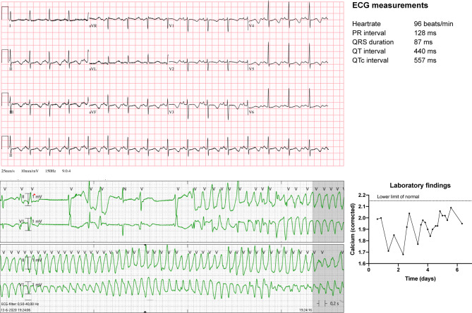
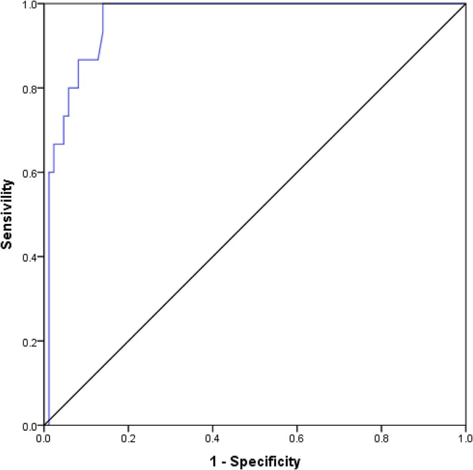
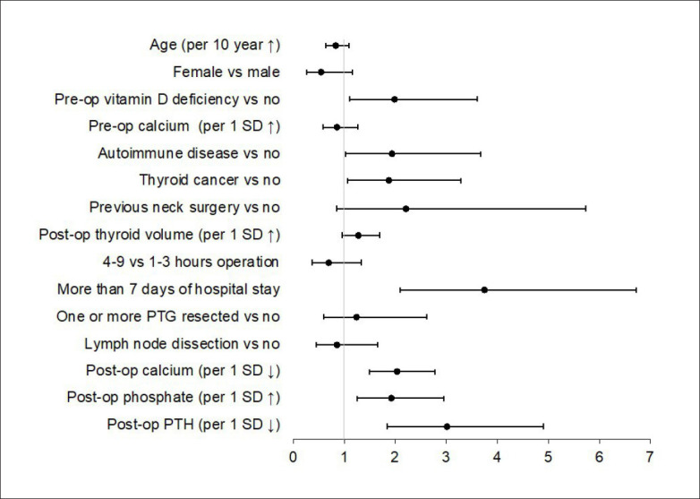

1874 — Hạ calci máu sau cắt tuyến giáp: ngưỡng calci hiệu chỉnh, PTH 1–6 giờ và tiêu chuẩn xuất viện / Post-thyroidectomy hypocalcemia
Tags: pattern:ha-calci pattern:QT-dai pattern:co-giat vung:tuyen-giap vung:co protocol:xet-nghiem protocol:ECG score:PTH score:calci-hieu-chinh
Mức chắc chắn (certainty): tổng hợp y văn (literature synthesis) — nhóm tự biên từ các nguồn mở, đã đối chiếu authorString/PMCID: 742 bệnh nhân cắt toàn bộ tuyến giáp với ngưỡng ioPTH (CC BY 4.0, PMC11785684), 498 bệnh nhân với PTH ngày 1 (CC BY 4.0, PMC13563876), 105 bệnh nhân với PTH 6 giờ (CC BY 4.0, PMC12819874), 60 bệnh nhân + phân tích gộp 5 nghiên cứu về PTH 1 giờ (CC BY 4.0, PMC13533580), 20 RCT/3.669 bệnh nhân về dự phòng calci–vitamin D (CC BY 4.0, PMC13330921), 204 bệnh nhân về vitamin D3 trước mổ (CC BY-NC-ND 4.0, PMC13326965), 153 bệnh nhân Ả-rập Xê-út (CC BY-NC 4.0, PMC13227346), 1 ca hội chứng xương đói (CC BY 4.0, PMC8271050), tổng quan điều trị (CC BY 4.0, PMC12990180; CC BY 4.0, PMC11383864). Chỗ nào là suy luận của nhóm đều ghi rõ "suy luận".
Vì sao bài này quan trọng: cắt tuyến giáp là phẫu thuật nội tiết phổ biến nhất, và hạ calci máu là biến chứng thường gặp nhất: 51,6% bệnh nhân có hạ calci máu sau mổ, 39,9% thoáng qua và 11,7% vĩnh viễn trong một đoàn hệ 742 người (PMC11785684); một trung tâm khác ghi 70,6% (PMC13227346). Vấn đề không phải "có hay không có hạ calci" mà là ai cần ở lại, ai về được trong ngày, ai phải truyền calci — và đo bằng calci toàn phần, calci hiệu chỉnh hay ion hóa. Bài này đưa các ngưỡng số để trả lời, kèm ba cạm bẫy chết người: hạ calci che giấu bởi albumin, kiềm hô hấp do thở nhanh làm calci ion hóa tụt mà calci toàn phần bình thường, và hội chứng xương đói gây xoắn đỉnh dù đã truyền calci.
1. Tổng quan bệnh học – cơ chế hình ảnh: vì sao calci tụt sau mổ, và vì sao QT dài
- Sinh lý bình thường: PTH (parathyroid hormone) làm tăng calci máu theo ba đường — tăng hủy xương, tăng tái hấp thu calci ở ống lượn xa, và tăng hoạt 1α-hydroxylase ở thận để tạo calcitriol (1,25-(OH)₂-D) → tăng hấp thu calci ở ruột. PTH có nửa đời 2–4 phút, nên khi tuyến cận giáp bị cắt, đụng dập hoặc mất mạch nuôi, PTH tụt trong vòng 1–6 giờ — đây là cơ sở của mọi xét nghiệm sớm.
- Bốn cơ chế hạ calci sau cắt giáp (TẠI SAO):
- Suy cận giáp do mổ (surgical hypoparathyroidism): giảm khối tuyến → PTH thấp → giảm hủy xương, giảm tái hấp thu calci, giảm calcitriol. Chiếm phần lớn ca sớm < 24 giờ.
- Hội chứng xương đói (hungry bone syndrome): xương đang "khát" calci sau khi hết trạng thái cường giáp/nhiễm độc giáp → tăng lấy calci vào xương ngay sau khi PTH tụt; calci tụt sâu và kéo dài, đáp ứng kém với truyền calci (PMC8271050).
- Hạ magnesi máu: Mg thấp làm giảm tiết và giảm tác dụng PTH → hạ calci không đáp ứng với calci/calcitriol cho tới khi bù Mg.
- Kiềm hô hấp / thay đổi gắn protein: kiềm làm calci gắn albumin nhiều hơn → calci ion hóa giảm dù calci toàn phần bình thường; đây là cạm bẫy của bệnh nhân thở nhanh vì đau hoặc lo lắng sau mổ (PMC13123684).
- Vì sao QT dài — vật lý điện học: calci ngoại bào thấp làm kéo dài pha 2 (plateau) của điện thế hoạt động cơ tim vì dòng calci vào qua kênh L-type giảm và bất hoạt chậm; trên ECG, khoảng QT dài, ST dài, T dẹt; khi QTc đủ dài → xoắn đỉnh (torsades de pointes). Ca minh họa: bệnh nhân nữ 49 tuổi sau cắt giáp, QT 440 ms, QTc 557 ms, nhiều cơn xoắn đỉnh không có cung lượng, phải isoprenaline, tạo nhịp tạm, chẹn beta liều cao (PMC8271050). Điểm cần nhớ: ECG là "hình ảnh" của hạ calci — không cần CT/MRI.
- Vì sao phải dùng calci hiệu chỉnh: calci toàn phần gồm calci gắn albumin (~40%) và calci tự do; albumin thấp (suy dinh dưỡng, mất máu, bệnh gan) làm calci toàn phần thấp giả tạo. Công thức hiệu chỉnh cổ điển: Ca hiệu chỉnh (mg/dL) = Ca đo được + 0,8 × (4,0 − albumin g/dL); đổi sang mmol/L chia 4,0. Calci ion hóa (tham chiếu 1,05–1,30 mmol/L) không phụ thuộc albumin nhưng phụ thuộc pH — vì vậy phải ghi kèm tình trạng thở nhanh.
- Ngưỡng định lượng dùng trong bài:
- Hạ calci sinh hóa: calci toàn phần < 8,5 mg/dL (PMC13666056); calci hiệu chỉnh < 2,00 mmol/L (PMC13326965).
- Triệu chứng: tê quanh miệng, tê đầu chi, chuột rút, co cứng cơ, co giật, co thắt thanh quản — xuất hiện trong 72 giờ đầu trong định nghĩa của PMC13666056.
- Tần suất: 51,6% hạ calci máu (39,9% thoáng qua, 11,7% vĩnh viễn) (PMC11785684); 3,6% suy cận giáp vĩnh viễn ở đoàn hệ 498 người (PMC13563876); 70,6% ở đoàn hệ 153 người Ả-rập Xê-út (PMC13227346).
- Yếu tố nguy cơ (đa biến): cắt toàn bộ + nạo hạch cổ trung tâm OR 6,63 (1,68–26,11); calci trước mổ tăng 1 mg/dL giảm nguy cơ OR 0,46 (0,22–0,94) (PMC13666056); nữ ORA 2,9, đái tháo đường ORA 4,9, không thấy tuyến cận giáp trong biên bản mổ ORA 2,9; mổ lại là yếu tố của suy cận giáp vĩnh viễn (PMC13227346).
- PTH dự báo: PTH 1 giờ > 12 pg/mL → sens 100%, spec 89,1%, PPV 73,7%, NPV 100%; 4 giờ ≥ 14 pg/mL + calci ion hóa ≥ 1,05 mmol/L → xuất viện trong ngày (PMC13533580); PTH 6 giờ < 10,10 pg/mL** → hạ calci thoáng qua, **AUC 0,991 (0,978–1,000)** (PMC12819874); PTH **ngày 1 ≤ 7 pg/mL** → suy cận giáp vĩnh viễn **OR 16,60**, **NPV 99,4%** (PMC13563876); **ioPTH giảm ≤ 39%** → hạ calci "cực kỳ khó xảy ra"; **≥ 79,9%** → nên bổ sung calci; **> 93,7% → nguy cơ vĩnh viễn (PMC11785684).
- Dự phòng: calci + vitamin D so với không bổ sung: OR 0,31 (0,17–0,51) cho hạ calci lâm sàng, OR 0,27 (0,17–0,42) sinh hóa, OR 0,15 (0,05–0,32) cho nhu cầu truyền calci, giảm 0,44 ngày nằm viện; calci đơn thuần không có lợi ích rõ (20 RCT/3.669 bệnh nhân, PMC13330921). Vitamin D3 100.000 IU uống 1 tuần trước mổ: OR 0,28 (0,11–0,68), NNT 5 (PMC13326965).
2. Mẫu hình + chẩn đoán phân biệt theo thời điểm (gamut)
- Ba câu hỏi với mọi bệnh nhân sau cắt giáp: (1) calci hiệu chỉnh/ion hóa bao nhiêu? (2) PTH ở mốc nào và bao nhiêu? (3) có yếu tố làm sai lệch — albumin, pH, Mg, xương đói?
- Theo thời điểm (location = trục thời gian):
- < 24 giờ: suy cận giáp do mổ (hay gặp nhất); hội chứng xương đói nếu Basedow/nhiễm độc giáp; kiềm hô hấp do đau.
- 24–72 giờ: đỉnh triệu chứng; hạ calci nặng (co giật, co thắt thanh quản); đây là cửa sổ phải đo lại calci.
- > 6 tháng: suy cận giáp vĩnh viễn — định nghĩa theo thời gian, không theo một lần xét nghiệm.
- Theo cơ chế (gamut thực hành):
- Suy cận giáp thoáng qua: PTH thấp, calci thấp, phosphate cao, Mg bình thường; hồi phục trong vài tuần–vài tháng.
- Suy cận giáp vĩnh viễn: kéo dài > 6 tháng, cần calci + calcitriol suốt đời (PMC11383864).
- Hội chứng xương đói: calci tụt sâu, phosphate thấp, đáp ứng kém với calci truyền, kèm QT dài/xoắn đỉnh (PMC8271050).
- Hạ Mg máu: Mg thấp, PTH "không hợp lý" (thấp hoặc bình thường), không đáp ứng với calci cho tới khi bù Mg.
- Kiềm hô hấp: calci ion hóa thấp, calci toàn phần bình thường, pH cao, bệnh nhân thở nhanh.
- Giả hạ calci (pseudo): albumin thấp, calci ion hóa bình thường, không triệu chứng — không truyền calci.
- Nguyên nhân khác cần loại: suy thận cấp, truyền máu khối lượng lớn (citrate), bisphosphonate/denosumab, viêm tụy cấp, nhiễm khuẩn nặng.
- Mnemonic "PTH–Ca–Mg–pH" cho bốn biến phải đọc cùng lúc: PTH (có bị cắt/đụng dập?), Ca hiệu chỉnh/ion hóa, Mg (đủ để PTH tác dụng?), pH (kiềm làm ion hóa tụt).
3. Bảng so sánh phân biệt (ma trận đối chiếu)
| Thực thể | Hình ảnh / xét nghiệm điển hình | Chốt vào (rule-in) | Chốt loại (rule-out) | Gợi ý xác nhận |
|---|---|---|---|---|
| Suy cận giáp thoáng qua sau mổ | PTH thấp sớm (1–6 giờ), calci hiệu chỉnh < 2,00 mmol/L, phosphate cao, ECG QT dài | PTH tụt ngay sau mổ + calci thấp + hồi phục trong vài tuần | PTH bình thường/cao → không phải suy cận giáp | PTH 1–6 giờ; calci hiệu chỉnh mỗi 12–24 giờ |
| Suy cận giáp vĩnh viễn | Calci thấp > 6 tháng, cần calcitriol liên tục; PTH ngày 1 ≤ 7 pg/mL | Kéo dài > 6 tháng + phụ thuộc calci/calcitriol | Hồi phục trong 6 tháng → thoáng qua | PTH ngày 1; theo dõi 6 tháng |
| Hội chứng xương đói | Calci tụt sâu, phosphate thấp, QT dài/xoắn đỉnh, đáp ứng kém với truyền calci | Basedow/nhiễm độc giáp trước mổ + calci tụt sâu sau mổ + phosphate thấp | Phosphate cao + PTH thấp đơn thuần → suy cận giáp thường | Theo dõi calci–phosphate–Mg; ECG |
| Hạ Mg máu | Mg thấp, PTH thấp/bình thường "không hợp lý", calci không lên dù bù calci | Mg thấp + calci không đáp ứng bù calci | Mg bình thường → loại | Đo Mg; bù Mg rồi đo lại PTH/calci |
| Kiềm hô hấp | pH cao, calci ion hóa thấp, calci toàn phần bình thường, thở nhanh | pH cao + ion hóa thấp + toàn phần bình thường | Toàn phần và ion hóa cùng thấp → hạ calci thật | Khí máu; cho thở chậm/giảm đau rồi đo lại |
| Giả hạ calci do albumin thấp | Albumin thấp, calci toàn phần thấp, ion hóa bình thường, không triệu chứng | Albumin thấp + ion hóa bình thường | Ion hóa thấp → hạ calci thật | Calci hiệu chỉnh + ion hóa |
| Nguyên nhân khác (suy thận, citrate, bisphosphonate) | Creatinine tăng, truyền máu lớn, thuốc ức chế hủy xương | Bối cảnh thuốc/truyền máu/suy thận | Bối cảnh cắt giáp đơn thuần → nghĩ suy cận giáp | Creatinine, tiền sử thuốc, lượng máu truyền |

*Trên: ECG QT 440 ms, QTc 557 ms, ST dài/T dẹt do hạ calci. Dưới trái: nhịp ghi lại cơn xoắn đỉnh (torsades de pointes). Dưới phải: đường calci theo ngày (khoảng 1,6–2,2 mmol/L). Nguồn: Hagdorn QAJ và cs., Neth Heart J 2021 (PMC8271050) Fig. 1, CC BY 4.0.*Đọc ECG và xét nghiệm theo thứ tự
- ECG trước, khi có triệu chứng: QT/QTc dài + T dẹt = hạ calci cho tới khi chứng minh ngược; QTc > 500 ms là ngưỡng nguy cơ xoắn đỉnh (ca minh họa 557 ms).
- Calci hiệu chỉnh + ion hóa + albumin cùng lúc: nếu chỉ có calci toàn phần, luôn hỏi albumin.
- PTH theo mốc giờ — không dùng "PTH bất kỳ": giá trị 1 giờ, 4 giờ, 6 giờ, ngày 1 có ngưỡng khác nhau.
4. Protocol xét nghiệm – điều trị + sơ đồ quyết định
- Trước mổ: calci toàn phần + albumin (hoặc ion hóa), 25-OH-vitamin D, Mg, creatinine; xem xét vitamin D3 100.000 IU uống 1 tuần trước mổ (OR 0,28; NNT 5) (PMC13326965).
- Sau mổ — lịch xét nghiệm:
- 1 giờ: PTH (ngưỡng > 12 pg/mL → NPV 100%).
- 4 giờ: PTH + calci ion hóa; PTH ≥ 14 pg/mL + iCa ≥ 1,05 mmol/L → xuất viện trong ngày (PMC13533580).
- 6 giờ: PTH (< 10,10 pg/mL → nguy cơ cao) (PMC12819874).
- Ngày 1: PTH (≤ 7 pg/mL → nguy cơ vĩnh viễn, NPV 99,4%) + calci hiệu chỉnh (PMC13563876).
- 24–72 giờ: calci hiệu chỉnh lặp lại bất kể triệu chứng — đỉnh hạ calci muộn; đo Mg nếu calci không đáp ứng.
- Điều trị:
- Không triệu chứng, calci hiệu chỉnh 1,90–2,00 mmol/L: calci uống 1–3 g calci nguyên tố/ngày chia 2–4 lần + calcitriol 0,25–1 µg × 2 lần/ngày (PMC11383864); chỉnh theo calci.
- Triệu chứng nhẹ–vừa: tăng calci uống + calcitriol; calci carbonate chứa 40% calci nguyên tố, citrate 21% (gấp đôi liều nếu dùng citrate) (PMC12990180).
- Nặng (co giật, co thắt thanh quản, QTc > 500 ms): 10% calcium gluconate pha trong 150 mL NaCl 0,9% truyền, theo dõi ECG; tiêm trực tiếp chỉ dành cho co thắt thanh quản cấp (PMC12990180).
- Mục tiêu: giữ calci ở nửa dưới bình thường (8,0–8,5 mg/dL) để tránh tăng calci và sỏi thận (PMC12990180).
- Levothyroxine: uống 1 giờ trước hoặc 3 giờ sau calci — calci làm giảm hấp thu levothyroxine (PMC12990180).
- Hội chứng xương đói: calci + calcitriol liều cao, bù Mg, theo dõi ECG; có thể cần tạo nhịp tạm nếu xoắn đỉnh (PMC8271050).
- Tiêu chuẩn xuất viện (dùng trong sơ đồ): không triệu chứng + PTH 4 giờ ≥ 14 pg/mL + iCa ≥ 1,05 mmol/L + hiểu dấu hiệu và có số liên lạc; nếu không đạt → ở lại theo dõi 24–72 giờ.
flowchart TD
A[Cắt tuyến giáp] --> B[PTH 1-4 giờ + calci ion hóa]
B --> C{PTH 4 giờ >= 14 và iCa >= 1,05?}
C -->|Có| D[Xuất viện trong ngày + calci uống dự phòng]
C -->|Không| E[Đo calci hiệu chỉnh 24-72 giờ + Mg]
E --> F{Triệu chứng nặng hoặc QTc > 500 ms?}
F -->|Có| G[Truyền calcium gluconate + theo dõi ECG]
F -->|Không| H{Calci hiệu chỉnh < 2,00 mmol/L?}
H -->|Có| I[Calci uống 1-3 g/ngày + calcitriol 0,25-1 µg x2]
H -->|Không| J[Theo dõi, khám lại 1 tuần]
I --> K{PTH ngày 1 <= 7 pg/mL?}
K -->|Có| L[Nguy cơ vĩnh viễn: hẹn 6 tháng, calcitriol dài hạn]
K -->|Không| M[Giảm liều dần theo calci]
G --> E
5. Biến thể bình thường và cạm bẫy
- Cạm bẫy 1 — albumin thấp làm "hạ calci" giả: calci toàn phần thấp nhưng ion hóa bình thường ở người suy dinh dưỡng/mất máu; truyền calci trong trường hợp này là điều trị số xét nghiệm, có thể gây tăng calci. Luôn tính calci hiệu chỉnh hoặc đo ion hóa.
- Cạm bẫy 2 — thở nhanh sau mổ: kiềm hô hấp làm ion hóa tụt trong khi calci toàn phần bình thường; bệnh nhân có thể co cứng bàn tay mà xét nghiệm "bình thường". Đọc pH và tần số thở, không chỉ calci toàn phần (PMC13123684).
- Cạm bẫy 3 — hội chứng xương đói: calci tụt sâu, kéo dài, đáp ứng kém với truyền calci, và có thể gây xoắn đỉnh tái phát dù đã bù calci (PMC8271050). Nghĩ tới khi có Basedow/nhiễm độc giáp trước mổ, phosphate thấp, và cần calcitriol liều cao.
- Cạm bẫy 4 — quên Mg: hạ Mg làm PTH không tác dụng; bù calci mà không bù Mg → calci không lên. Đo Mg ở mọi ca không đáp ứng.
- Cạm bẫy 5 — dùng một ngưỡng PTH cho mọi thời điểm: 1 giờ (> 12), 4 giờ (≥ 14), 6 giờ (< 10,10), ngày 1 (≤ 7) là các ngưỡng khác nhau từ các nghiên cứu khác nhau — không trộn (PMC13533580, PMC12819874, PMC13563876). Đây là lỗi hay gặp khi trích dẫn "PTH thấp".
- Cạm bẫy 6 — coi "hạ calci sinh hóa" là phải truyền: 51,6% bệnh nhân có hạ calci sinh hóa nhưng phần lớn không triệu chứng; truyền calci tràn lan làm tăng canxi niệu, sỏi thận, và kéo dài nằm viện. Điều trị theo triệu chứng + mức calci, không theo một con số.
- Biến thể bình thường: QT hơi dài ở người trẻ/nữ và calci toàn phần thấp nhẹ do albumin là hai biến thể hay bị đọc thành bệnh; so với ECG cũ và ion hóa để tránh overcall.
6. Tự lượng giá — Blind Quiz
Ca 1 — Nữ 49 tuổi, Basedow, cắt toàn bộ tuyến giáp. Ngày 2: tê quanh miệng, co cứng bàn tay, rồi ngất. Nhìn ECG, mô tả trước khi mở đáp án.
- Gợi ý: đo QT/QTc; tìm cơn nhịp nhanh thất; nhìn đường calci.
- Hỏi: 3 chẩn đoán phân biệt? Vì sao truyền calci vẫn còn cơn?
Bấm để hiện đáp án
- Dấu hiệu: QT 440 ms, QTc 557 ms, ST dài/T dẹt; cơn xoắn đỉnh; calci dao động 1,6–2,2 mmol/L.
- Chẩn đoán: hạ calci máu nặng do hội chứng xương đói sau cắt giáp ở bệnh nhân Basedow — xương lấy calci mạnh, đáp ứng kém với truyền.
- Vì sao vẫn còn cơn: hạ calci sâu và kéo dài + QT dài; cần calcitriol liều cao, bù Mg, và kiểm soát nhịp (isoprenaline/tạo nhịp tạm/chẹn beta) (PMC8271050).
- Nguồn ảnh: Hagdorn QAJ và cs., Neth Heart J 2021 (PMC8271050) Fig. 1, CC BY 4.0.
Ca 2 — Bệnh nhân cắt toàn bộ giáp + nạo hạch cổ trung tâm. PTH 6 giờ = 8 pg/mL. Nhìn đường ROC, quyết định xuất viện hay không.

- Gợi ý: trục tung/nghang là gì? Điểm cắt nằm ở đâu? Giá trị 8 pg/mL nằm phía nào?
- Hỏi: ngưỡng PTH 6 giờ là bao nhiêu? Nếu bệnh nhân không triệu chứng, có được về?
Bấm để hiện đáp án
- Dấu hiệu: ROC của PTH 6 giờ cho suy cận giáp vĩnh viễn; điểm cắt tối ưu 10,10 pg/mL (với hạ calci thoáng qua AUC 0,991).
- Diễn giải: PTH 8 pg/mL < 10,10 → nguy cơ cao, không xuất viện ngay; đo calci hiệu chỉnh 24–72 giờ, bắt đầu calci + calcitriol, hẹn khám sớm.
- Không triệu chứng không đủ để về nếu PTH dưới ngưỡng — hạ calci có thể xuất hiện muộn 48–72 giờ.
- Nguồn ảnh: Segarra-Balao A và cs., J Clin Endocrinol Metab 2026 (PMC12819874) Fig. 3, CC BY 4.0.
Ca 3 — Bạn phải giải thích cho đồng nghiệp: "cho calci dự phòng có làm giảm hạ calci thật không?". Nhìn forest plot, trả lời bằng số.

- Gợi ý: trục X là odds ratio; đường 1,0 là không khác biệt.
- Hỏi: yếu tố nào tăng nguy cơ vĩnh viễn rõ nhất? PTH sau mổ giảm 1 SD thì sao?
Bấm để hiện đáp án
- Dấu hiệu: PTH sau mổ giảm 1 SD và calci sau mổ giảm 1 SD, phosphate sau mổ tăng 1 SD đều nằm bên phải 1,0 — tăng nguy cơ; calci trước mổ tăng 1 SD nằm bên trái — giảm nguy cơ; mổ cổ trước đó có khoảng tin cậy rất rộng (nguy cơ cao nhưng không chắc).
- Trả lời: dự phòng calci + vitamin D giảm hạ calci lâm sàng OR 0,31 (0,17–0,51), sinh hóa OR 0,27, truyền calci OR 0,15, giảm 0,44 ngày nằm viện; calci đơn thuần không đủ (PMC13330921).
- Nguồn ảnh: Samargandy S và cs., Ann Saudi Med 2025 (PMC12640529) Fig. 1, CC BY-NC-ND 4.0.
Bài liên quan chéo
- 941 – Đốt nhiệt tuyến cận giáp: PTH washout, 4D-CT
- 972 – Bướu giáp thòng trung thất: CT chèn ép khí quản, khi nào mở xương ức
- 940 – Đột nhiệt nhân giáp độc (AFTN): RFA so với I-131
- 700 – Tổng quan Đầu cổ
Ảnh
- Tên file:
1874_ha-calci_<Modality>_<SourceID>.jpg; nguồn + giấy phép từng ảnh ởimages/CREDITS.md. - Ảnh tải từ Europe PMC (CC BY / CC BY-NC-ND), nguyên bản, không crop/kéo giãn; ảnh ND không đưa vào ảnh ghép.
- Không dùng CT/MRI cho hạ calci; ECG là "hình ảnh" chính — chỉ dẫn link các atlas ECG nếu cần.
Không dùng để chẩn đoán độc lập khi chưa có người hướng dẫn.